A Ferramentas Gerais atua há mais de 65 anos no setor industrial, com um portfólio de ferramentas das principais marcas do mundo e mais de 90 mil m² de estrutura para atender clientes de todos os portes. Mesmo assim, boa parte das vendas B2B ainda dependia do time comercial para aplicar manualmente o preço e o imposto de cada contrato.
Ferramentas Gerais has served Brazil's industrial sector for over 65 years, with a portfolio of tools from the world's leading brands and more than 90,000 m² of infrastructure to serve clients of every size. Even so, most B2B sales still depended on the sales team to manually apply each contract's pricing and tax rules.
Fui o product designer no projeto: levantamento de requisitos com stakeholders da FG e do cliente piloto, user flow, e UI para desktop e mobile do catálogo, seleção de unidade e checkout. Fiz o handoff completo para o time de desenvolvimento - a estrutura que defini seguiu como base do MVP.
I was the product designer on this project: requirements gathering with stakeholders at FG and the pilot client, user flow, and desktop/mobile UI for the catalog, unit selection, and checkout. I completed the full handoff to the development team - the structure I defined remained the foundation of the MVP.
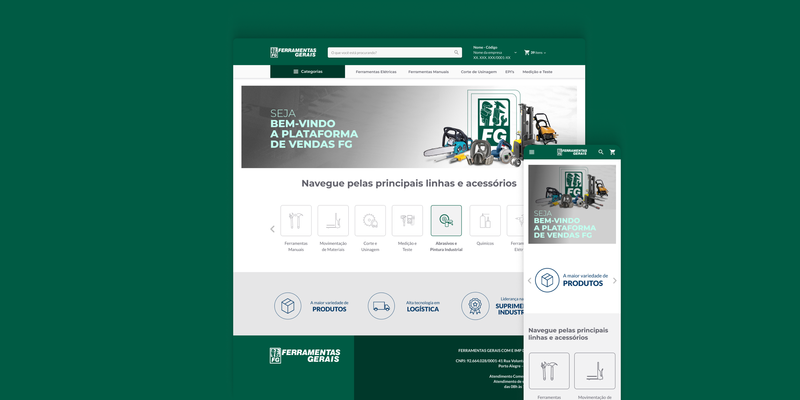
01 - O Problema
01 - The Problem
Foi mapeado como cada cliente comprava hoje e o que a FG precisava padronizar para levar esse processo direto para dentro da fábrica do cliente.
We mapped how each client was buying today and what FG needed to standardize to bring that process directly inside the client's plant.
02 - A Solução
02 - The Solution
Telas para desktop e mobile cobrindo catálogo, seleção de unidade/contrato e checkout com o imposto detalhado, pensadas para o comprador dentro da fábrica.
Desktop and mobile screens covering the catalog, unit/contract selection, and a checkout with itemized tax - designed for the buyer standing on the plant floor.
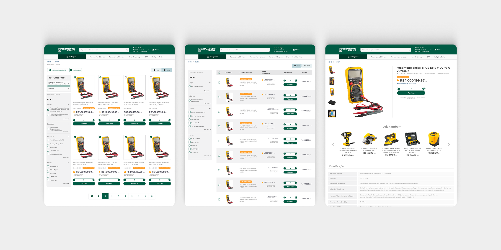
Cada comprador vê exatamente as condições negociadas para a sua unidade, sem precisar confirmar por telefone ou e-mail.
Each buyer sees exactly the terms negotiated for their unit, with no need to confirm by phone or email.
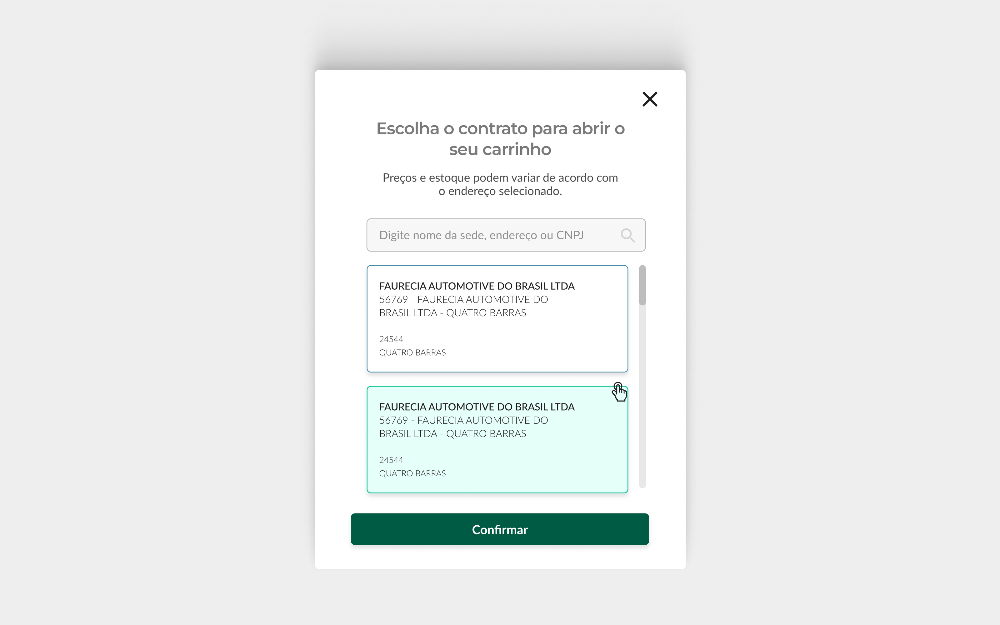
Antes da compra, o comprador confirma a unidade e o contrato vigente - a base para aplicar o preço e o imposto certos naquela fábrica.
Before purchasing, the buyer confirms the active unit and contract - the basis for applying the correct price and tax at that plant.
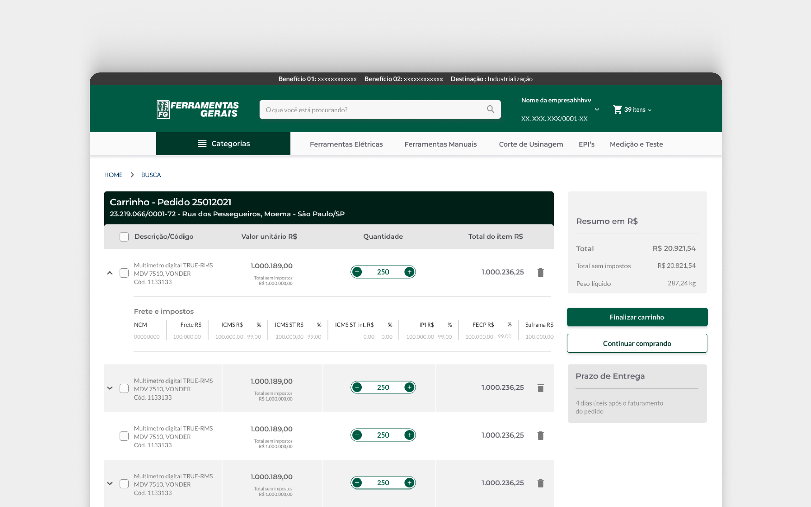
O carrinho mostra o valor de cada imposto aplicado por item, dando transparência para a aprovação interna do comprador.
The cart shows the tax applied to each item, giving transparency for the buyer's internal approval process.
03 - Sistema de Design
03 - Design System
Paleta e tipografia definidas para dar consistência ao catálogo, ao checkout e às telas de aprovação. Clique em uma cor para copiar o hex.
Palette and typography defined to keep the catalog, checkout, and approval screens consistent. Click a color to copy its hex code.
Aa
Aa
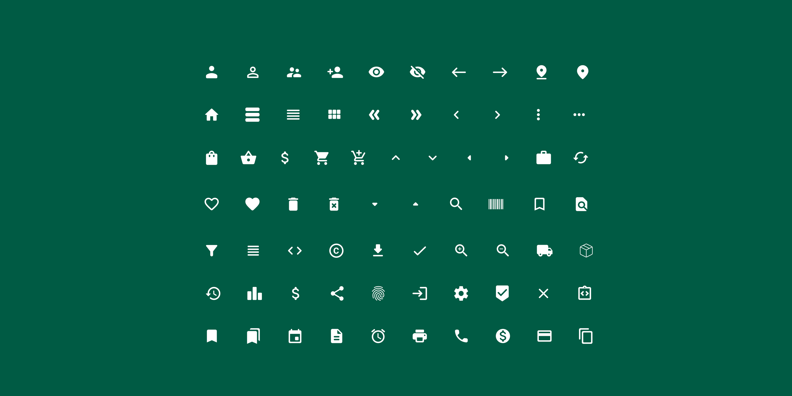
04 - UI em Detalhe
04 - UI in Detail
Passe o mouse (ou toque, no celular) para ver como quatro componentes-chave da plataforma se comportam entre o estado padrão e o estado ativo.
Hover (or tap, on mobile) to see how four key components on the platform behave between their default and active states.
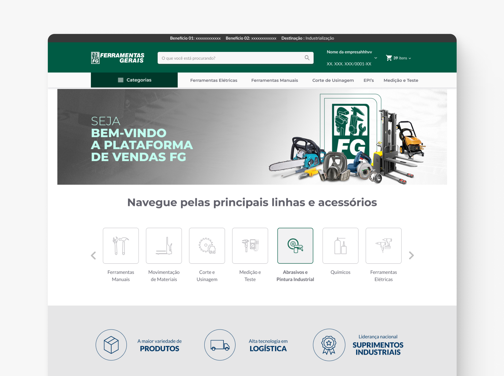
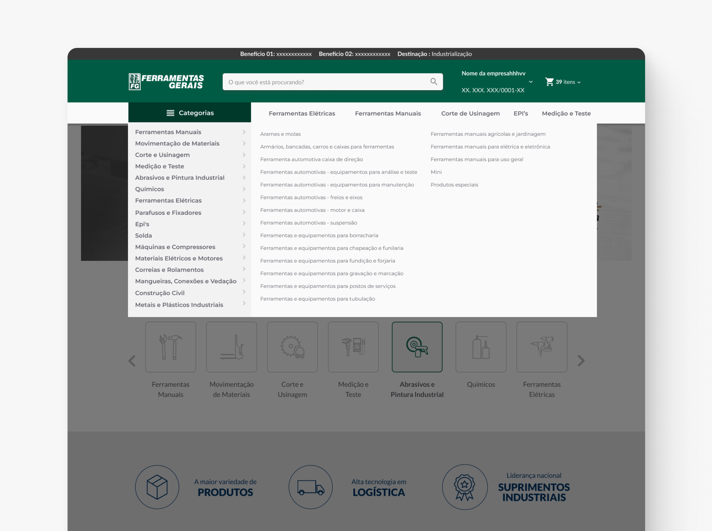
Navegação por categoria. Com um catálogo de ferramentas de dezenas de marcas, a navbar precisa expor categorias sem exigir que o comprador já saiba o que procurar.
Category navigation. With a catalog spanning tools from dozens of brands, the navbar needed to surface categories without requiring the buyer to already know what they're looking for.
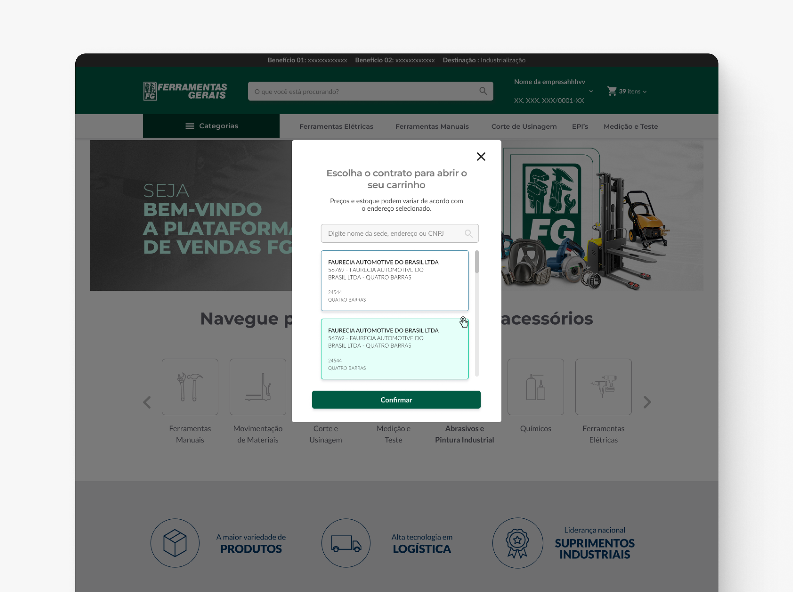
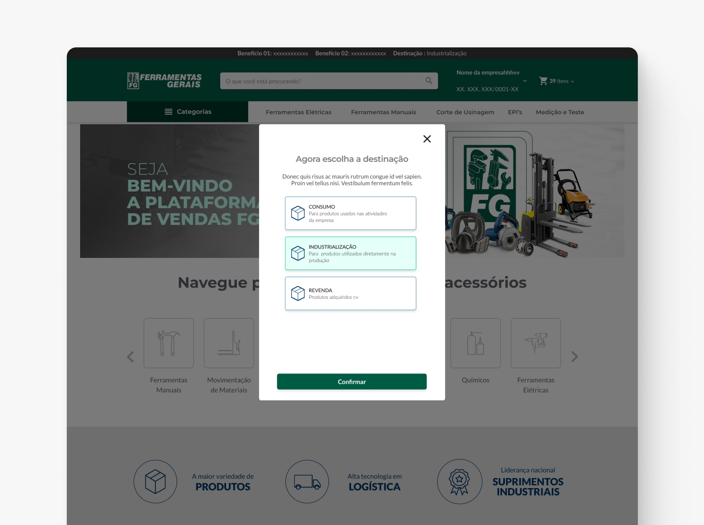
Seleção de unidade. Como cada fábrica pode ter seu próprio contrato, esse modal trava a experiência até o comprador confirmar em qual unidade está comprando.
Unit selection. Since each plant can have its own contract, this modal gates the experience until the buyer confirms which unit they're purchasing for.
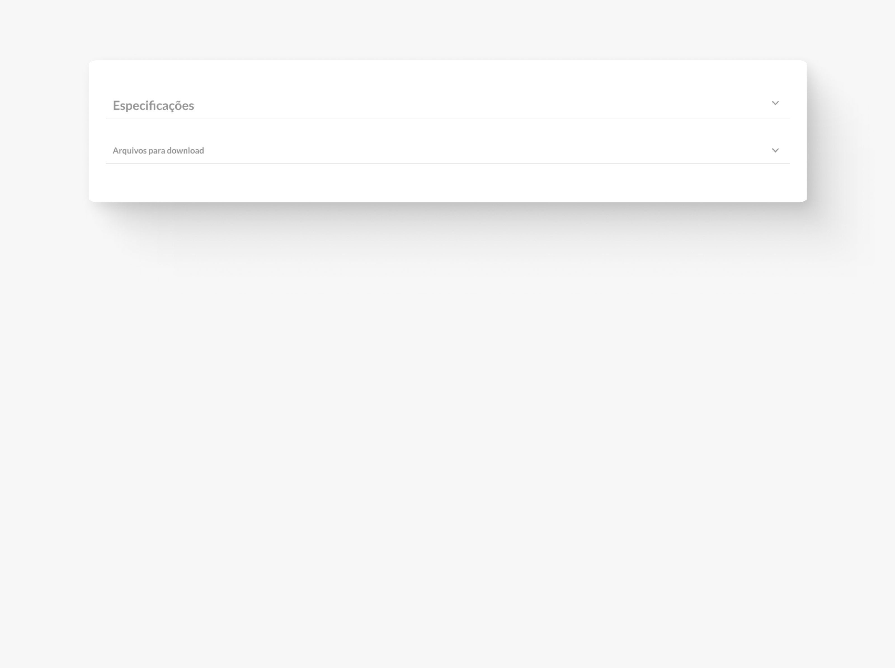
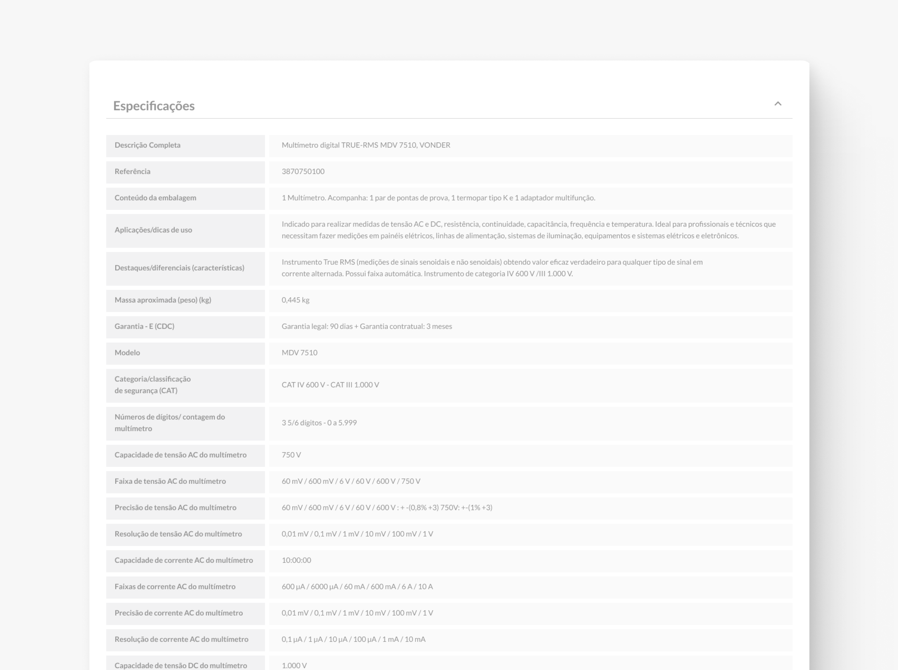
Ficha técnica sob demanda. Compradores técnicos precisam de especificações completas das ferramentas - mas nem todo comprador quer ver isso de cara, então a página do produto começa resumida.
Specs on demand. Technical buyers need full tool specifications - but not every buyer wants that upfront, so the product page starts summarized.
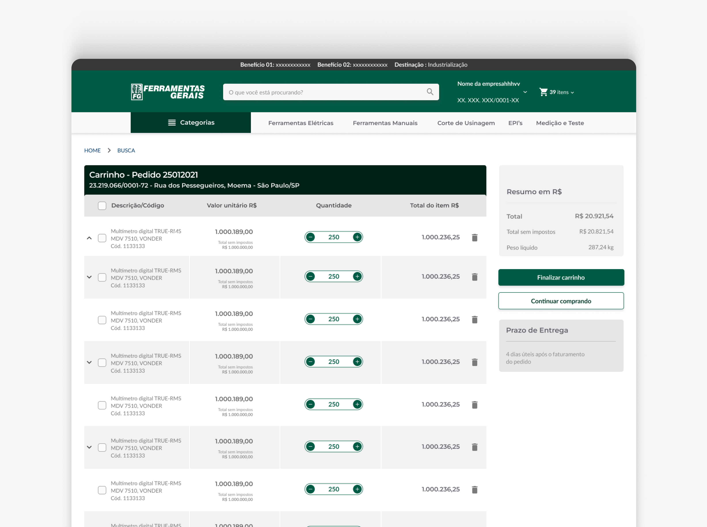
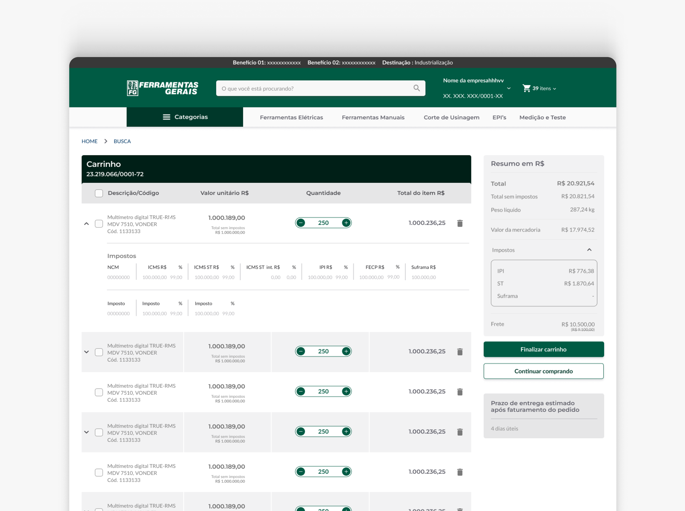
Transparência fiscal no carrinho. Abrir o detalhamento evita que o comprador leve uma surpresa na aprovação interna do pedido por causa de um imposto que ele não esperava.
Tax transparency in the cart. Expanding the breakdown avoids surprising the buyer during internal order approval because of an unexpected tax.
05 - O Processo
05 - The Process
O cronograma do MVP priorizou validar o fluxo direto com o cliente piloto depois do lançamento.
The MVP timeline prioritized validating the direct workflow with the pilot customer after the launch.
Levantei os requisitos junto aos stakeholders da FG e do cliente piloto - como cada contrato aplicava preço e imposto, e quais aprovações internas o comprador precisava seguir.
Gathered requirements with stakeholders at FG and the pilot client - how each contract applied pricing and tax, and what internal approvals the buyer needed to follow.
Mapeei o fluxo do comprador dentro da fábrica, da seleção de unidade até a aprovação do pedido, para identificar onde o processo manual criava atrito.
Mapped the buyer's flow inside the plant, from unit selection to order approval, to identify where the manual process created friction.
Desenhei as telas de catálogo, seleção de unidade, produto e checkout para desktop e mobile, sempre com o preço e o imposto do contrato correto visíveis.
Designed the catalog, unit selection, product, and checkout screens for desktop and mobile, always keeping the correct contract price and tax visible.
Fiz o handoff completo das telas e fluxos para o time de desenvolvimento - a estrutura que desenhei foi a base do MVP que foi ao ar.
Handed off the screens and flows in full to the development team - the structure I designed became the foundation of the MVP that shipped.
06 - Escopo e Meu Papel
06 - Scope and My Role
Ainda sem métricas pós-lançamento, mas com o escopo real de um cliente parceiro grande dentro de uma empresa consolidada no setor industrial.
No post-launch metrics yet, but with the real scope of a large partner client inside an established industrial company.
65+
Anos de mercado da Ferramentas Gerais
Years Ferramentas Gerais has been in the market
90 mil+ m²
De estrutura da FG para atender a indústria
In FG facilities serving the industrial sector
5
Unidades da FG no RS, SC e PR
FG units across the states of RS, SC and PR
~6 meses
Do discovery ao handoff para desenvolvimento
From discovery to dev handoff
Próximo projeto
Next project